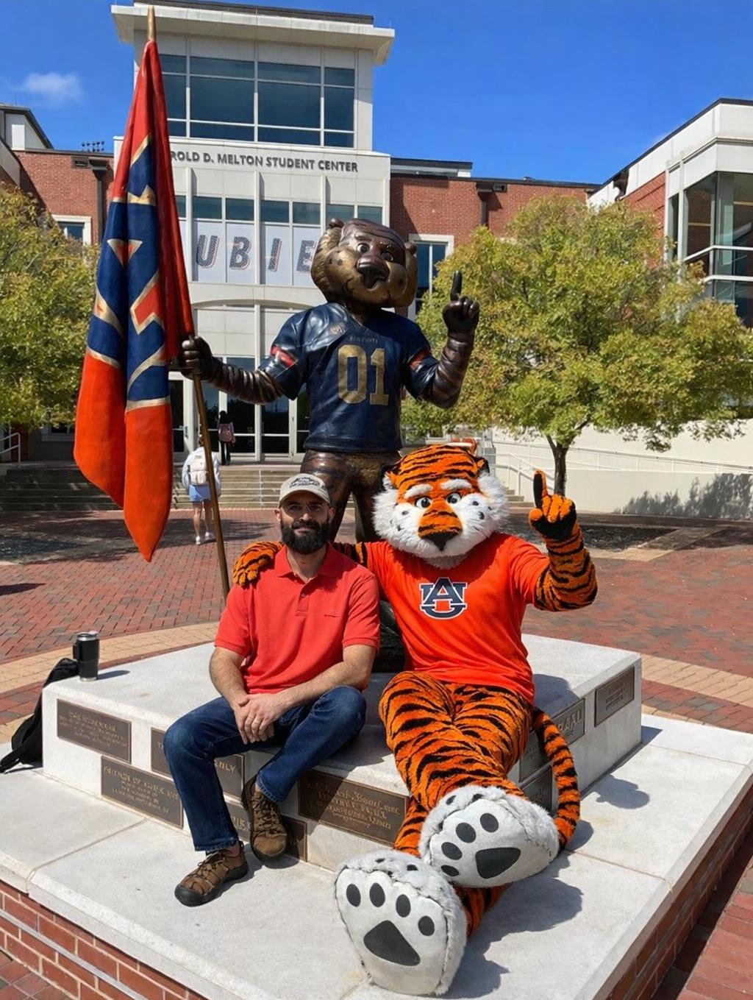
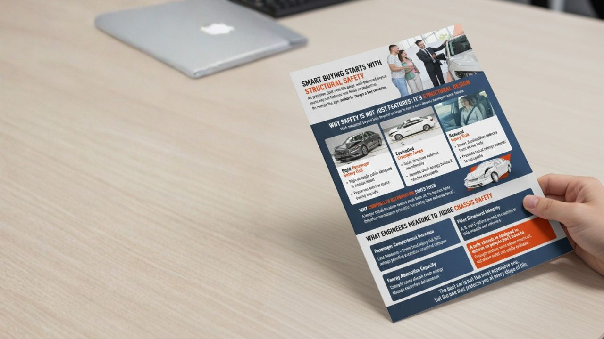
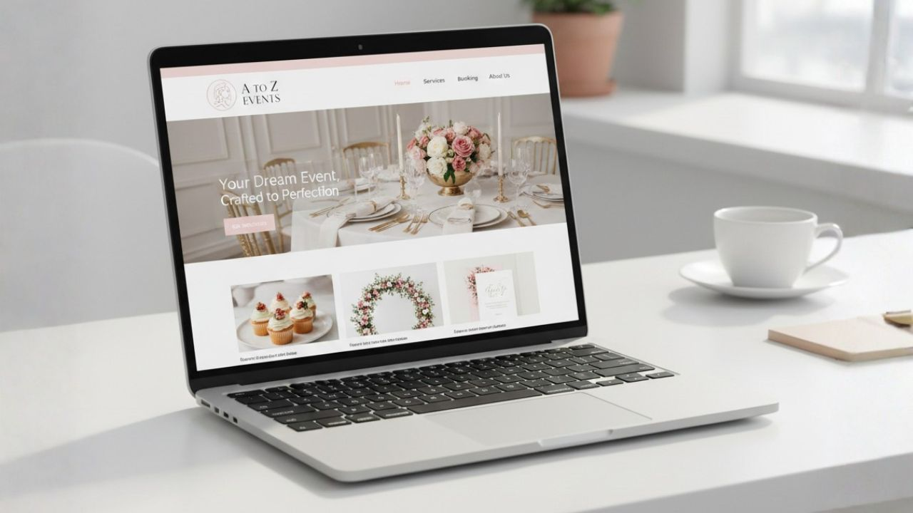

Intercultural Practice in Technical and Professional Communication
Hi, I'm Noman. My work explores how technical and professional communication operates as an assemblage of practices, technologies, institutions, and stakeholders. I examine how communication travels across cultural, linguistic, and organizational boundaries, and how practitioners design texts and systems that remain responsive to diverse audiences and contexts.
Noman Ali
MTPC Graduate Student at Auburn University
My research examines how technical communication emerges through interactions among technologies, institutions, and audiences. I focus on intercultural communication, user-centered design, and the rhetorical decisions that shape communication across diverse contexts.
Read Full Bio →
Artifacts
Projects demonstrating technical communication, design, research, and web development skills.

Designing Smart Buying Starts With Structural Safety
This project details the design of a persuasive infographic, demonstrating how typography, color, and visual hierarchy function as rhetorical tools to guide consumer decision-making and convey complex data ethically.
Culinary Chronicles
This project explores editing as a collaborative, rhetorical practice by detailing the creation of a multicultural cookbook, emphasizing the balance between structural standardization, document usability, and the ethical preservation of diverse cultural narratives.

A to Z Events Web Development
This project details the design and development of a functional website for a real-world client, framing web development as a rhetorical act of translation that balances client identity, usability, and technical constraints.
Research
Scholarly work examining assemblage, intercultural communication, and the evolving identity of technical and professional communication.
Social Media Activism in Pakistan: A Study of Aristotelian Rhetoric and Multimodal Digital Practices
This project analyzes how Pakistani activists use multimodal digital practices to navigate state repression and algorithmic censorship, adapting classical rhetoric for high-risk environments.
Rhetorical Analysis of Ultra-Processed Food Discourse
This project utilizes rhetorical analysis to examine how medical, corporate, advocacy, and regulatory stakeholders construct competing narratives and manage uncertainty around the health risks of ultra-processed foods.
Let's Connect
Interested in collaboration, research discussions, or web projects? I'd love to hear from you.